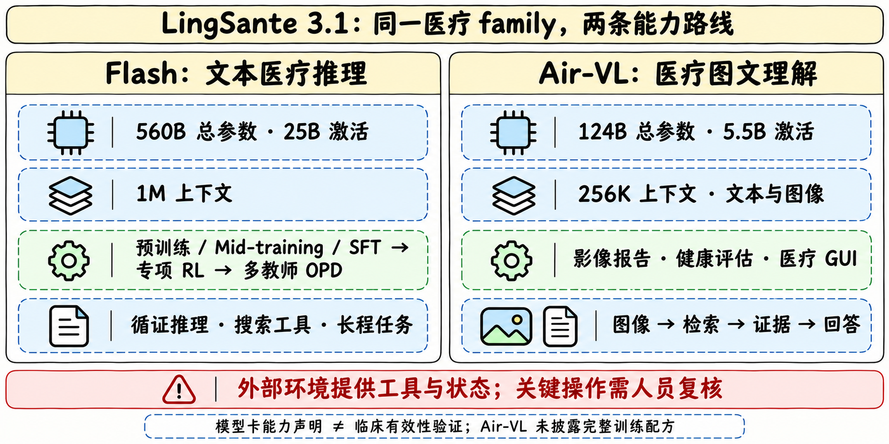
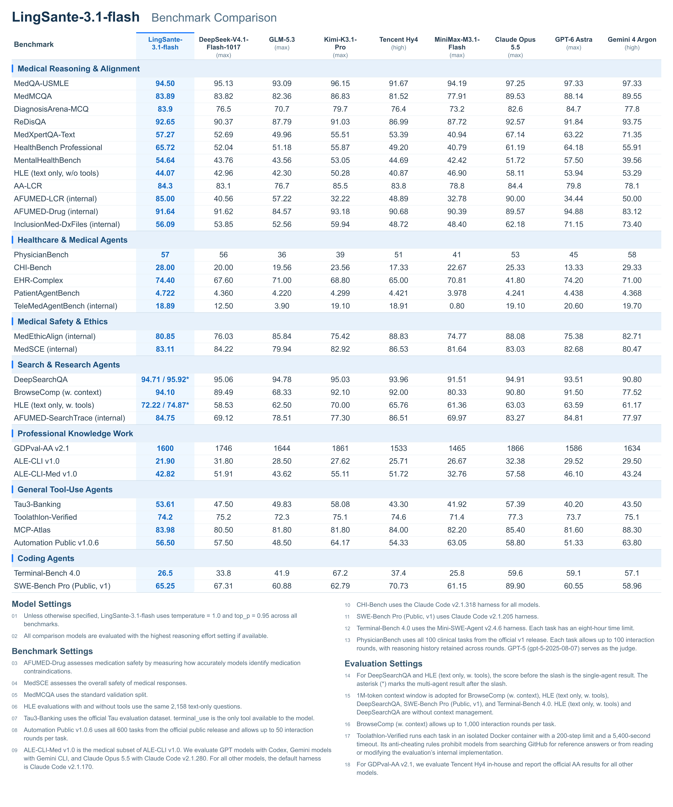
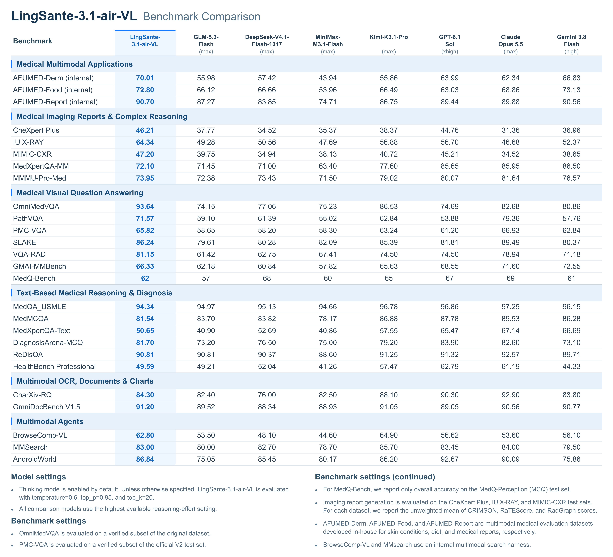

LingSante 3.1 — 医疗推理与图文工作流的两条路线

家族、日期与参数口径
| 型号 | 首个可核实公开事件（北京时间） | 骨干 / 输入 | 参数与上下文 |
|---|---|---|---|
| LingSante-3.1-flash | 11/22 22:27:52.924；UTC14:27:52.924 | Ling-3.1-flash；文本 | 主模型约560B/25B激活；宣称1M，配置262144 |
| Flash-MXFP4 | 11/22 22:28:34.901；UTC14:28:34.901 | Flash训练后RTN量化；文本 | 同一主模型；配置262144，不另计family |
| LingSante-3.1-air-VL | 11/23 01:14:32.770；前一日UTC17:14:32.770 | Ling-3.0-flash-VL；文本、图像 | 约124B/5.5B激活；配置131072，示例扩至262144 |
依据保存在src/publication_dates.json和原始活动页。Flash、Air-VL虽11/19创建，文件上传分别早于publish，也不能推断当时已公开。未发现更早正式公告，日期是当前可举证的公开事件口径。
三张模型卡均标MIT。Flash HF张量元数据约572.121B，Air-VL约124.848B；前者与560B主模型口径不能直接互换，Flash保留一层MTP。MXFP4元数据约294.290B存储元素包含打包表示，不能读成模型被训练成294B，也不能把25B激活当作只需加载25B权重。
问题与方法：训练信号如何对应真实任务
Flash描述三个框架：医疗证据—推理对齐，针对证据冲突与关键因素；长程任务环境，将动态子场景、工具和结构化验证放入同一流程；专业行为对齐，处理信息不完整、沟通和安全约束。预训练、mid-training、SFT持续混合通用与医疗数据，随后对医疗推理、工具、搜索、专业行为进行专项RL，最终多教师on-policy distillation合并互补能力。通用回放的动机是防止只学医学词汇却损伤搜索、代码和工具能力；这仍是方法动机，不是已公布的因果消融。
Air-VL强调四类任务：影像报告；皮肤、饮食、检验报告的健康评估；多模态检索与循证合成；真实应用GUI。它会结合病史、成像条件和图像质量，产生Findings/Impression，并通过追问补充信息。模型卡宣称覆盖120多种皮肤病、可识别单张复杂胸片8–9种阳性征象，但没有逐类样本、召回率或临床队列证明。其医疗与通用多模态联合训练、通用数据回放有描述，完整训练阶段和算法未披露；不能借用Flash的OPD流程替它补齐。
搜索、定位框、挂号和购药只是模型与外部环境配合的任务形态。权重本身不携带可调用的医院系统、工具后端、登录状态或动作验证器。医疗GUI成绩也不能替代患者信息正确性、交易权限和临床安全验收。
架构与上下文：声明、配置、运行条件分开
| 项目 | Flash | Air-VL |
|---|---|---|
| 类 / 类型 | BailingMoeV3ForCausalLM / bailing_hybrid | BailingMoeV3VLForConditionalGeneration |
| 语言层 | 72；卡称63 KDA+9 Gated MLA，7:1 | text_config42层，group size6 |
| hidden / attention heads | 4096 / 64 | 2560 / 32 |
| dense开头层数 | 4 | 2 |
| 路由专家 / 每token选取 | 512 / 8；另1共享专家 | 512 / 8；共享专家宽度768 |
| 专家FFN / dense FFN | 1280 / 10240 | 768 / 6144 |
| KV低秩 / RoPE theta | 512 / 6000000 | 512 / 6000000 |
| 原始配置最大位置 | 262144 | 131072 |
| 视觉组件 | 无原生图像输入契约 | 27层ViT，hidden1152，patch16，spatial merge2，temporal patch2 |
Flash模型卡和评测图写1M，当前config.json却为262144且rope_scaling为null；保存的普通Flash启动命令没有给出扩到1M的完整覆盖参数。MXFP4卡更明确写configured262144。这里只并列冲突，不擅自覆盖配置或宣称1M开箱即用。Air-VL示例显式打开长窗口覆盖，以YaRN factor2、original131072、partial_rotary_factor0.5扩到262144。配置中有video token和temporal patch并不足以证明这个医疗版本已评估视频输入；本轮定位仍按模型卡的文本与图像。
Flash评测：医学行为优势与执行短板共存

模型卡“专业行为仅次GPT-6 Astra”的叙述没有给出可复算的统一汇总式；具体HealthBench Professional为65.72，对GPT64.18，不能把这一行解释成全部医学任务排名。MedXpertQA-Text57.27低于Gemini71.35；InclusionMed-DxFiles56.09低于Gemini73.40和GPT71.15；TeleMedAgentBench18.89低于GPT20.60。EHR-Complex74.40略高于GPT74.20，但不能证明差异显著。
DeepSearchQA94.71/95.92和有工具HLE72.22/74.87分别是单Agent/多Agent，星号后不能拿来和没有相同架构、预算的结果混比。HLE无工具44.07与有工具72.22使用同一2158道纯文本题，但后者有1M窗口、工具、额外轨迹；不能全归为权重知识增长。BrowseComp with context94.10是给上下文条件，不能称无外部证据的通用检索成绩。以下逐行转录本模型32项值，完整九模型数值和全部脚注保留在原图。
| Benchmark | 本模型官方自报 |
|---|---|
| MedQA-USMLE | 94.50 |
| MedMCQA | 83.89 |
| DiagnosisArena-MCQ | 83.9 |
| ReDisQA | 92.65 |
| MedXpertQA-Text | 57.27 |
| HealthBench Professional | 65.72 |
| MentalHealthBench | 54.64 |
| HLE text-only 无工具 | 44.07 |
| AA-LCR | 84.3 |
| AFUMED-LCR（内部） | 85.00 |
| AFUMED-Drug（内部） | 91.64 |
| InclusionMed-DxFiles（内部） | 56.09 |
| PhysicianBench | 57 |
| CHI-Bench | 28.00 |
| EHR-Complex | 74.40 |
| PatientAgentBench | 4.722 |
| TeleMedAgentBench（内部） | 18.89 |
| MedEthicAlign（内部） | 80.85 |
| MedSCE（内部） | 83.11 |
| DeepSearchQA | 94.71 / 95.92* |
| BrowseComp with context | 94.10 |
| HLE text-only 有工具 | 72.22 / 74.87* |
| AFUMED-SearchTrace（内部） | 84.75 |
| GDPval-AA v2.1 | 1600 |
| ALE-CLI v1.0 | 21.90 |
| ALE-CLI-Med v1.0 | 42.82 |
| Tau3-Banking | 53.61 |
| Toolathlon-Verified | 74.2 |
| MCP-Atlas | 83.98 |
| Automation Public v1.0.6 | 56.50 |
| Terminal-Bench 4.0 | 26.5 |
| SWE-Bench Pro Public v1 | 65.25 |
温度1.0、top_p0.95；比较模型可用时采用最高reasoning effort。ALE-CLI-Med对GPT用Codex、Gemini用Gemini CLI、Claude用Claude Code2.1.280，其余默认Claude Code2.1.170；CHI-Bench统一Claude Code2.1.318，SWE-Bench Pro用2.1.205；TB4.0用Mini-SWE-Agent2.4.6，每题8小时。harness并未处处统一，原模型数值不能脱离这些条件解释。
PhysicianBench为官方v1全部100任务、最多100轮、跨轮保留推理历史，judge为GPT-5-2025-08-07。Automation含600任务、最多50轮。Toolathlon逐题隔离Docker、200步、5400秒且禁止寻找参考答案/访问内部实现。BrowseComp最多1000轮；DeepSearchQA、有工具HLE、BrowseComp、SWE和TB采用1M窗口，其中前两项无context management。GDPval-AA中Hy4自测，其余引用官方AA值。内部AFUMED、MedEthicAlign、MedSCE和DxFiles缺公开题目、样本分布、置信区间与完整运行账本，不能把它们并成可公开复查的统一榜单。
Air-VL评测：影像报告强，通用医疗文本不全面占优

CheXpert Plus46.21、MIMIC-CXR47.20、IU X-RAY64.34是影像报告指标组合值，官方按CRIMSON、RaTEScore、RadGraph未加权平均，不是诊断正确率百分比。AFUMED-Report90.70相对Gemini90.56只有0.14分，缺不确定性。OmniMedVQA93.64只在verified子集，PMC-VQA使用官方V2 test verified子集；MedQ-Bench62仅为MedQ-Perception MCQ总体准确率。不能冒充原数据全集成绩。
MedXpertQA-MM72.10低于Gemini86.50；HealthBench49.59低于GPT-6.1 Sol62.79；AndroidWorld86.84低于GPT92.67和Claude90.09。Air图用GLM-5.3-Flash/Gemini3.8 Flash/GPT6.1 Sol，Flash图用GLM5.3/Gemini4 Argon/GPT6 Astra，不能跨图声称Flash或Air大小收益。以下转录Air全部26项本模型成绩。
| Benchmark | 本模型官方自报 |
|---|---|
| AFUMED-Derm（内部） | 70.01 |
| AFUMED-Food（内部） | 72.80 |
| AFUMED-Report（内部） | 90.70 |
| CheXpert Plus | 46.21 |
| IU X-RAY | 64.34 |
| MIMIC-CXR | 47.20 |
| MedXpertQA-MM | 72.10 |
| MMMU-Pro-Med | 73.95 |
| OmniMedVQA | 93.64 |
| PathVQA | 71.57 |
| PMC-VQA | 65.82 |
| SLAKE | 86.24 |
| VQA-RAD | 81.15 |
| GMAI-MMBench | 66.33 |
| MedQ-Bench | 62 |
| MedQA_USMLE | 94.34 |
| MedMCQA | 81.54 |
| MedXpertQA-Text | 50.65 |
| DiagnosisArena-MCQ | 81.70 |
| ReDisQA | 90.81 |
| HealthBench Professional | 49.59 |
| CharXiv-RQ | 84.30 |
| OmniDocBench v1.5 | 91.20 |
| BrowseComp-VL | 62.80 |
| MMSearch | 83.00 |
| AndroidWorld | 86.84 |
评测默认thinking开，temperature0.6/top_p0.95/top_k20；卡中Quickstart却使用temperature1.0，部署采样示例不能冒充评测配置。BrowseComp-VL和MMSearch使用内部多模态search harness，未给复现环境；三个AFUMED图文集合为内部数据，样本量和患者/机构隔离未披露。图称最高可用reasoning effort，但未给统一token/工具预算和误差条。
MXFP4与推理部署边界
路由专家gate/up/down为E2M1、group32、E8M0共享scale，每字节打包两个FP4值；先按源scale还原FP8再RTN。其他模块保持FP8/BF16/FP32混合，MTP保留；没有新训练或校准集。卡称全部checkpoint313230131991字节、291.72GiB，这不是峰值显存。Humming0.1.12支持W4A8的FP8 E4M3输入group32，或W4A16的BF16输入；--dtype bfloat16不会自动覆盖已设置的Humming输入量化环境变量。
普通Flash推荐8×H200 TP8/EP8，4×GB300可改TP4/EP4；Air-VL示例4×141GB GPU，8×80GB可用TP8；MXFP4示例4×H20-3e、TP4/EP4/DP1、context262144、chunked prefill8192、max running32、NEXTN。缺统一负载、延迟/吞吐、峰值内存与量化精度对照，不据“轻量”推断单卡适用。
SGLang镜像和vLLM分支均为开发版本，须锁image digest/commit、模型revision、parser、chat template和输入预处理。ling3 parser负责解出思考/工具调用，外部应用仍要执行工具并回传结果；不要把能生成tool_call当作完整Agent系统。官方源码与模板已静态归档，未安装依赖或执行trust_remote_code。
对Agent Training的判断与可转化实验
先固定题目与患者/机构隔离、证据库日期、工具schema、交互轮数、thinking与总token预算，比较同一骨干的通用/医疗SFT/专项RL/OPD；医疗结论、引用归因、信息追问和工具终态分别评分。再比较FlashFP8与MXFP4在同硬件/同激活模式下的工具选取、停止行为、幻觉与延迟。对Air-VL区分原始128K与YaRN256K，并单列图像质量、患者史缺失和多图顺序扰动。没有公开检查点与数据时，只能记为实验设计，不能填出虚构消融曲线。
本资料是研究模型档案，不给个体诊疗建议。官方明确两模型非医疗器械，输出不可独立用于诊断、处方、治疗或临床分诊；模拟环境分数不能替代临床验证。高风险医疗动作仍需专业人员复核，外部工具权限与患者信息处理另行验证。
来源与关联
- [S1] 官方Flash模型卡：架构、训练描述、运行与完整成绩图。
- [S2] 官方Air-VL模型卡：图文任务、原图与扩窗命令。
- [S3] 官方MXFP4模型卡：RTN、模块精度与存储契约。
- [S4] 官方HF活动：原始publish事件定日；原件和提取JSON保存在src。
- [S5] 官方Collection：family与量化合并线索；非首发日期证据。
LingSante-Pulse是生理信号encoder，不能与本次医疗推理模型混为同一个任务。GLM-5.3-Flash提供混合注意力与视觉验证器的对照；Kimi K3可对照长程执行与训练预算披露，具体基准版本仍按各自原表。
📊 相关可视化: lingsante_31_poster_zh.html